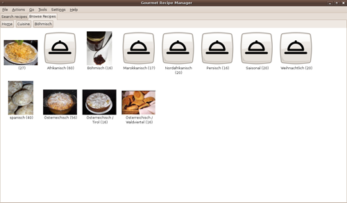
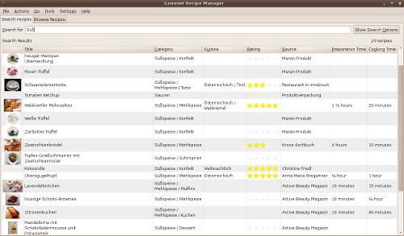
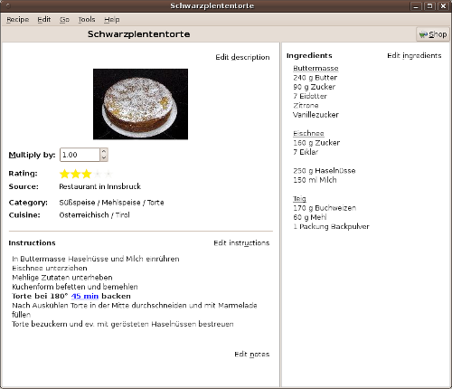
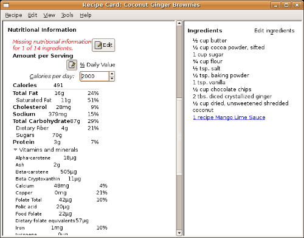
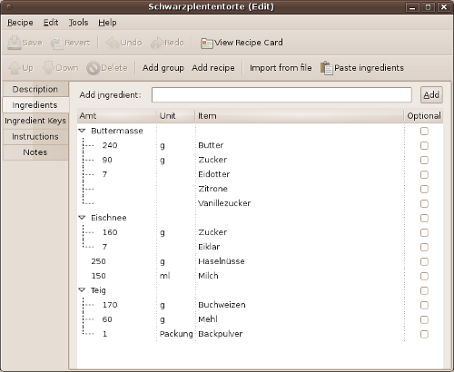
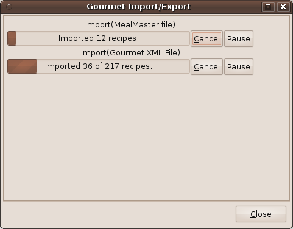
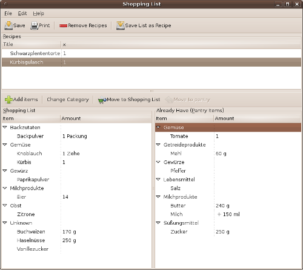

- Introduction
- Searching and Sorting
- Display
- Editing
- Import and Export
- Shopping Lists
- Credits/Contribute
Gourmet Recipe Manager is a recipe-organizer available for Windows, Linux, and other Unix systems (including Mac OS X, i.e. via the Fink or MacPorts package managers) that allows you to collect, search, organize, and browse your recipes. Gourmet can also generate shopping lists and calculate nutritional information. It imports Mealmaster, MasterCook and KRecipe files and exports PDFs, webpages and other formats. Gourmet is free software and uses Python, GTK+ and SQLAlchemy.
{kind=link}
For an overview of the features Gourmet Recipe Manager offers, feel free to browse through the tabs on top of the page. You can download Gourmet Recipe Manager from the GitHub project page and file bug reports and make feature requests there. Our Launchpad project page will allow you to seek help and sign up for the mailing list.
Simple Search
A simple index view allows you to look at all your recipes as a list and quickly search through them by ingredient, title, category, cuisine, rating, or instructions. Searching happens as you type to save you keystrokes, and multiple kinds of searches can easily be combined from this same view (so you can search for salads (category) with walnuts (ingredient) without having to open a separate dialog. You can easily sort recipes by clicking on the column you'd like to sort by. Furthermore, for advanced users, you can search using regular expressions.
{kind=link}
Recipe Card Display
 Individual recipes open in their own windows, just like recipe cards drawn out of a recipe box. Recipes are attractively displayed with a minimal amount of controls and settings cluttering the interface. From the recipe card view, you can instantly multiply or divide a recipe, and Gourmet will adjust all ingredient amounts and even adjust the units to keep them as readable as possible (so that 2 tbs. x 4 displays as 1/2 cup).
{kind=link}
Since you often need to refer to ingredients as you read a recipe, the ingredient list is displayed in a separate pane, so that you can look at ingredients as you scroll through the steps of a recipe.
The recipe card view also includes nutritional information for your recipe. Clicking on the "Edit" button brings up a simple wizard that will bring you through the ingredients in your recipe, allowing you to pick equivalences from the USDA nutritional database or enter nutritional information by hand. Gourmet does its best to choose good defaults as it guides you through your nutritional information, and it remembers your settings for future recipes. The nutritional information is not directly tied to the displayed ingredient information, so you can make reasonable substitutions and approximations for nutritional calculations without damaging the integrity of your recipes. You can also tell Gourmet to ignore certain ingredients — no need to waste time looking up nutritional information for every last spice after all!
{kind=link}
Future versions of Gourmet may make use of this information to allow searching and selecting recipes by nutritional content — for now, we just display the information we have and try to make it easy for those interested in nutrition to enter in their data as quickly as possible. In the future, we will also provide more information by default, and we may look for a way to create a community-generated database of nutritional information and equivalences.
Recipe Editor
{kind=link}
Gourmet aims to make entering ingredients as intuitive and painless as possible, while still allowing for powerful features. Features include:
- A keyed ingredient list which allows searches and shopping-list generation to understand synonyms (like aubergine and eggplant) and ignore ingredient descriptions (i.e. to treat "tomatoes, finely chopped" as "tomatoes" for the purpose of searching and generating shopping lists.
- An intuitive spreadsheet-like editing interface
- An alternative, fast form-like ingredient entering interface (which allows you to easily type ingredient lists without looking at the screen.
- Drag-n-drop support for importing ingredient lists from your web browser or other application.
- Support for pasting ingredient lists in from your clipboard.
- Support for grouping ingredients within a recipe.
- Support for calling another recipe as an ingredient.(Note: this allows you to use a recipe as a menu!)
- Support for optional ingredients.
In addition to ingredients and instructions, you can enter information about categories, cuisines, and ratings that you can later use to search for recipes. In each case, Gourmet allows you a drop down menu of standard categories and categories you've used in the past, but also allows you to enter any custom categories you like.
You can also add images to your recipe for an attractive display. Thumbnails will be displayed in the recipe index. Currently, only HTML export supports images.
Import and Export
 Gourmet includes simple and powerful import and export filters for a number of formats, including the two most common recipe formats on the web (mealmaster and mastercook).
{kind=link}
Gourmet can import the following kinds of files:
- Mealmaster Files
- MasterCook text files
- MasterCook XML files
- Gourmet XML files
- KRecipe XML Files
- MyCookbook files
- Archives (such as Zip Files, Gzip Files, or Tarballs)
- Websites, such as epicurious and recipezaar
- Unformatted plain text files or websites (in this case, Gourmet will ask you to identify ingredients, instructions, etc.
Gourmet also can import ingredient lists from a regular plain text list, which can be imported from a file, pasted from the clipboard or dragged onto the editing view.
Gourmet can export the following kinds of files:
- PDF Files
- Recipe Web Pages
- Rich Text Format
- Plain Text
- Mealmaster Files
- Gourmet XML Files
- MyCookbook files
Gourmet aims to import and export as many common formats as possible. If you have a format you'd like to import, please submit a feature request, or, if you're a programmer, go ahead and start writing the filter yourself!
Shopping List Manager
Gourmet allows you to automatically generate shopping list from your recipes. You can easily multiply recipes when you add them to adjust for the number of people you're cooking for. If the units are convertable, different units used in different recipes will be added up correctly on your shoppings list (Gourmet even knows the density of some common foods to allow volume-to-weight conversions!). If Gourmet can't convert your units, the shopping list will simply display both units -- for example, the screenshot shows both tsp. and cloves of garlic, since these units can't be sensibly combined.
{kind=link}
If you already have an item that appears on your shopping list, you can drag it into your "pantry" so it won't be included! Items added to your pantry will be remembered in the future (so you don't have to manually remove items like "water" from your shopping list every time a recipe calls for it). However, since the pantry list is shown next to the shopping list, you will always have a list at hand of all the ingredients called for by your recipes. (You can drag an item back from the pantry to the shopping list if you've run out.)
The shopping list is also automatically sorted into categories.
Gourmet knows the basic categories of a number of foods
(produce, meat, fish), and you can create whatever categories are
convenient for your own shopping -- I use it for sorting out the
basic sections and aisles of my local grocery store and those items
that I get from specialty stores. You can set up shopping
categories as you enter recipes, or you can move ingredients around
within the shopping list view by drag and dropping or using a popup
menu.
Credits
Gourmet Recipe Manager by Thomas Mills
Hinkle and contributors.
Website Design by Bernhard
Reiter and Kati Pregartner.
Cookie icon by Nyall Dawson.
Download button by Adam Willoughby-Knox.
Gourmet Recipe Manager is licensed under the GPL.
Contribute
If you want to contribute to the project and you're a python programmer, please take a look at the source code (hosted at GitHub) and start hacking! Due to its plugin-based architecture, Gourmet can be easily extended by new features. If you would like to use Gourmet in a language other than English, you can help translate gourmet using this web-based tool (this requires no programming knowledge!).